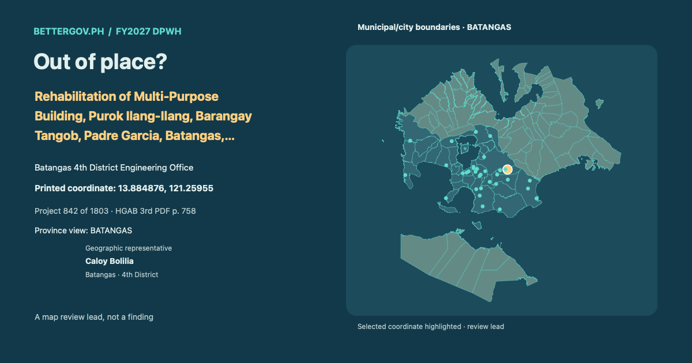

Caloy BoliliaBatangas · 4th DistrictOfficial profile ↗

Batangas 4th District Engineering Office · Geographic representative: Caloy Bolilia · Batangas · 4th District. Printed coordinate 13.884876, 121.25955. Geographic coverage is not sponsorship. Proposed allocation. Coordinate signals are review leads, not findings.